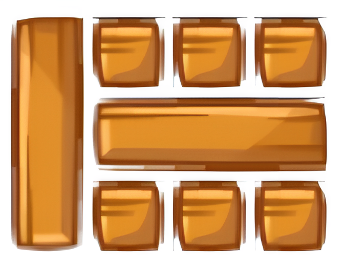
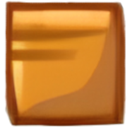
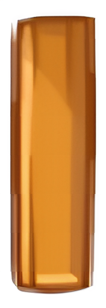
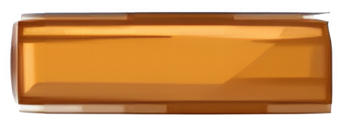

The 1st ChatGPT4PCG Competition
Character-like Level Generation for Science Birds
Sample Prompt
Use `ab_drop()` function to generate a stable structure that looks like the <OBJECT>—the goal. Dropping position and order are crucial.
1. Definitions
Slots: The map's width is equally partitioned into W slots where W = 20, with slots 0 and 19 being the most left and right, respectively.
Layers: The map's height is equally partitioned into H layers where H = 16, with layers 0 and 15 being the bottom and top layers, respectively.
Base: The bottom of the map, i.e., layer 0.
2. Environment
There are three block types as follows:
b11, a square block whose width is 1 unit and height is 1 unit
b31, a horizontal block whose width is 3 units and height is 1 unit
b13, a vertical block whose width is 1 unit and height is 3 units
3. Tool
Use the `ab_drop()` function to vertically drop a block from layer H such that its center is at slot y and drop earlier blocks representing more bottom parts of the structure.Prompt Rules
- The prompt must be written in English using only alphanumeric characters and the following symbols: /, , +, -, *, `, ', ", ., ,, !, @, #, $, %, ^, &, (, ), _, =, [, ], {, }, |, <, and >.
- The maximum word count for the prompt is 900 words.
- Prompts exceeding this limit or containing disallowed characters will result in automatic disqualification.
- Responses from the ChatGPT API must contain code blocks indicated by the presence of three backticks (```) in the output. If no code blocks are present, the response will be skipped, and its score will be 0.
- The prompt must include
<OBJECT>to indicate a section of the prompt that will be replaced with each target character, such as "A," "B," or "X." Prompts without<OBJECT>will not be assessed. - Participants must use only the
ab_drop()function in their response. The use of other function names or functions is not allowed. If intermediate results are obtained using other functions, participants must provide a script to convert them into a series ofab_drop()functions. The definition of the
ab_drop()function is as follows:- It drops a block vertically from the top so that its center is located at slot
x_position. It has two parameters:
block_type: a value that indicates the type of block to be placed. The possible values areb11,b13, andb31.b11denotes a square block whose size is 1x1 cell.b13denotes a column block whose size is 1x3 cells.b31denotes a row block whose size is 3x1 cells.
x_position: a horizontal index of a grid cell, where0represents the leftmost cell of the grid, andW-1represents the rightmost cell of the grid. Thex_positionparameter indicates the center pivot point of the block being placed. For example, ifb31is placed atx_position=4, it will occupy cells(3, 0),(4, 0), and(5, 0).
- It drops a block vertically from the top so that its center is located at slot